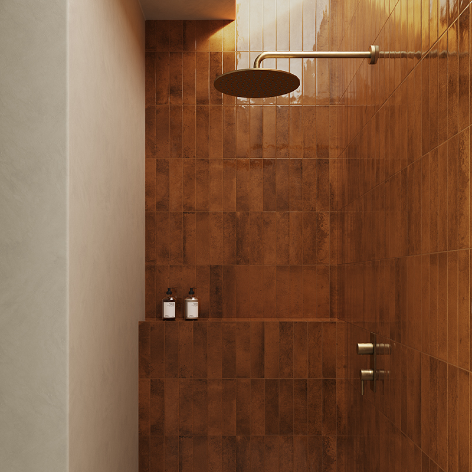
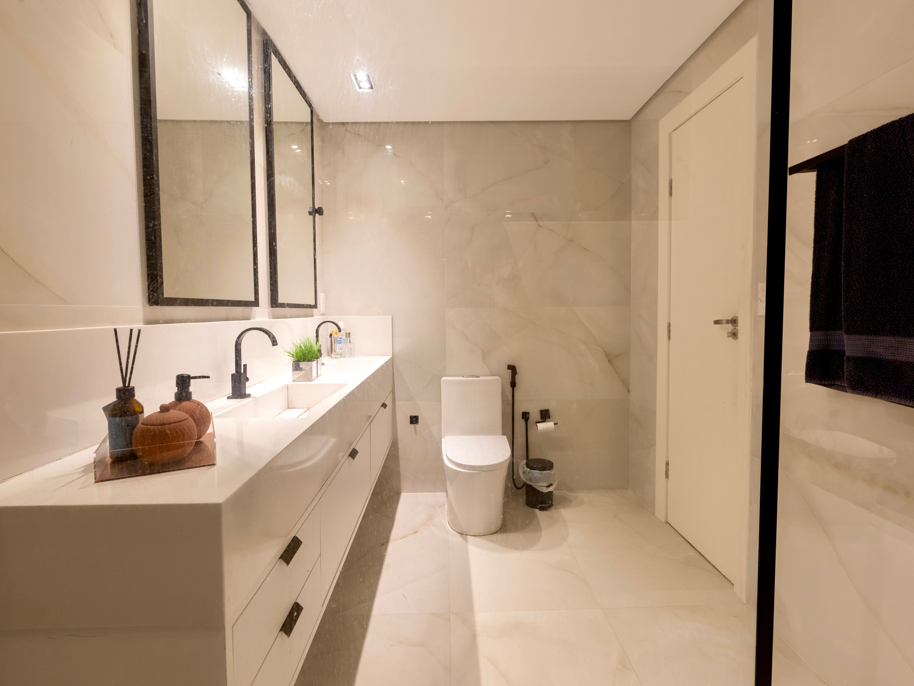
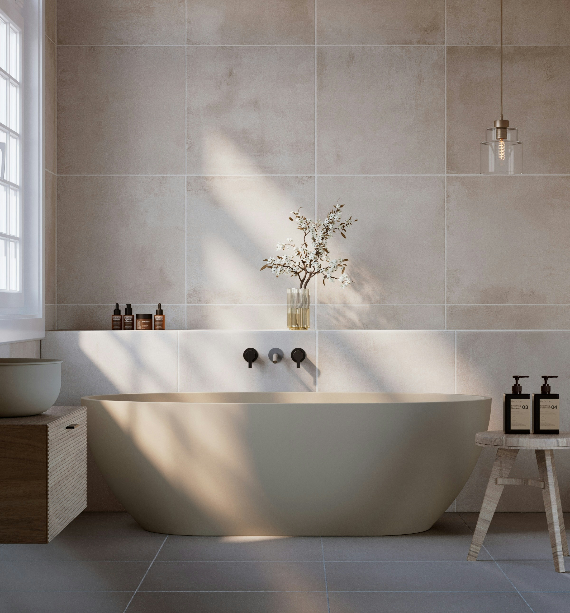
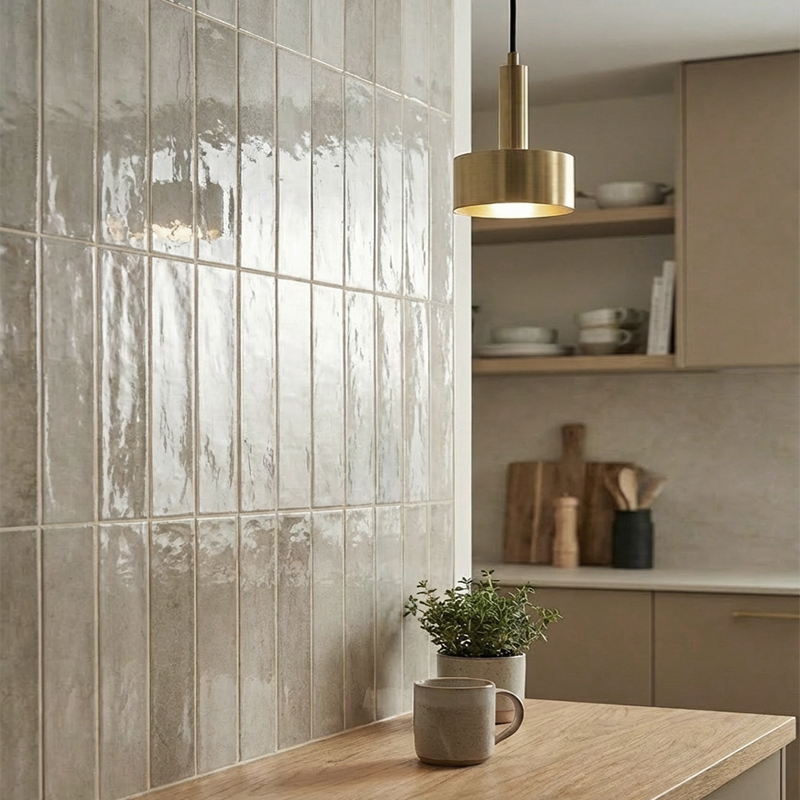
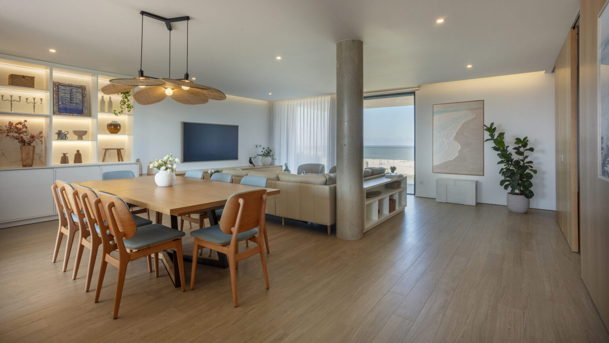

A NOSSA HISTÓRIA
Sobre a Lusitile
Cerâmica, design e matéria que transformam espaços.
O NOSSO UNIVERSO
Da matéria ao espaço
Cada projeto nasce da combinação entre matéria, design, inovação e a forma como vivemos os espaços.




01
Missão
Criar soluções cerâmicas que unem design, qualidade e funcionalidade, contribuindo para espaços modernos, confortáveis e duradouros.
02
Visão
Ser uma referência no setor da cerâmica, acompanhando tendências e desenvolvendo soluções para diferentes projetos e ambientes.
03
Valores
Qualidade, inovação, atenção ao detalhe, confiança e compromisso em cada projeto.
QUEM CONFIA EM NÓS
O que dizem sobre a Lusitile

